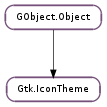

| static | add_builtin_icon(icon_name, size, pixbuf) |
| static | get_default() |
| static | get_for_screen(screen) |
| static | new() |
| append_search_path(path) | |
| choose_icon(icon_names, size, flags) | |
| choose_icon_for_scale(icon_names, size, scale, flags) | |
| get_example_icon_name() | |
| get_icon_sizes(icon_name) | |
| get_search_path() | |
| has_icon(icon_name) | |
| list_contexts() | |
| list_icons(context) | |
| load_icon(icon_name, size, flags) | |
| load_icon_for_scale(icon_name, size, scale, flags) | |
| load_surface(icon_name, size, scale, for_window, flags) | |
| lookup_by_gicon(icon, size, flags) | |
| lookup_by_gicon_for_scale(icon, size, scale, flags) | |
| lookup_icon(icon_name, size, flags) | |
| lookup_icon_for_scale(icon_name, size, scale, flags) | |
| prepend_search_path(path) | |
| rescan_if_needed() | |
| set_custom_theme(theme_name) | |
| set_screen(screen) | |
| set_search_path(path) |
None
| Name | Parameters | Return | Description |
|---|---|---|---|
| changed | Emitted when the current icon theme is switched or GTK+ detects that a change has occurred in the contents of the current icon theme. |
| Name | Type | Access |
|---|---|---|
| parent_instance | GObject.Object | r |
Bases: GObject.Object
Gtk.IconTheme provides a facility for looking up icons by name and size. The main reason for using a name rather than simply providing a filename is to allow different icons to be used depending on what icon theme is selected by the user. The operation of icon themes on Linux and Unix follows the Icon Theme Specification. There is a default icon theme, named hicolor where applications should install their icons, but more additional application themes can be installed as operating system vendors and users choose.
Named icons are similar to the facility, and the distinction between the two may be a bit confusing. A few things to keep in mind:
, such as Gtk.STOCK_OK or Gtk.STOCK_OPEN. Named icons are easier to set up and therefore are more useful for new icons that an application wants to add, such as application icons or window icons.
Stock images can only be loaded at the symbolic sizes defined by the Gtk.IconSize enumeration, or by custom sizes defined by Gtk.IconSize.register (), while named icons are more flexible and any pixel size can be specified.
Because stock images are closely tied to stock items, and thus to actions in the user interface, stock images may come in multiple variants for different widget states or writing directions.
A good rule of thumb is that if there is a stock image for what you want to use, use it, otherwise use a named icon. It turns out that internally stock images are generally defined in terms of one or more named icons. (An example of the more than one case is icons that depend on writing direction; Gtk.STOCK_GO_FORWARD uses the two themed icons “gtk-stock-go-forward-ltr” and “gtk-stock-go-forward-rtl”.)
In many cases, named themes are used indirectly, via Gtk.Image or stock items, rather than directly, but looking up icons directly is also simple. The Gtk.IconTheme object acts as a database of all the icons in the current theme. You can create new Gtk.IconTheme objects, but it’s much more efficient to use the standard icon theme for the Gdk.Screen so that the icon information is shared with other people looking up icons. In the case where the default screen is being used, looking up an icon can be as simple as:
GError *error = NULL;
GtkIconTheme *icon_theme;
GdkPixbuf *pixbuf;
icon_theme = gtk_icon_theme_get_default ();
pixbuf = gtk_icon_theme_load_icon (icon_theme,
"my-icon-name", // icon name
48, // size
0, // flags
&error);
if (!pixbuf)
{
g_warning ("Couldn't load icon: &percnts", error->message);
g_error_free (error);
}
else
{
// Use the pixbuf
g_object_unref (pixbuf);
}
| Parameters: |
|
|---|
Registers a built-in icon for icon theme lookups. The idea of built-in icons is to allow an application or library that uses themed icons to function requiring files to be present in the file system. For instance, the default images for all of GTK+’s stock icons are registered as built-icons.
In general, if you use Gtk.IconTheme.add_builtin_icon () you should also install the icon in the icon theme, so that the icon is generally available.
This function will generally be used with pixbufs loaded via GdkPixbuf.Pixbuf.new_from_inline ().
| Returns: | A unique Gtk.IconTheme associated with the default screen. This icon theme is associated with the screen and can be used as long as the screen is open. Do not ref or unref it. |
|---|---|
| Return type: | Gtk.IconTheme |
Gets the icon theme for the default screen. See Gtk.IconTheme.get_for_screen ().
| Parameters: | screen (Gdk.Screen) – a Gdk.Screen |
|---|---|
| Returns: | A unique Gtk.IconTheme associated with the given screen. This icon theme is associated with the screen and can be used as long as the screen is open. Do not ref or unref it. |
| Return type: | Gtk.IconTheme |
Gets the icon theme object associated with screen ; if this function has not previously been called for the given screen, a new icon theme object will be created and associated with the screen. Icon theme objects are fairly expensive to create, so using this function is usually a better choice than calling than Gtk.IconTheme.new () and setting the screen yourself; by using this function a single icon theme object will be shared between users.
| Returns: | the newly created Gtk.IconTheme object. |
|---|---|
| Return type: | Gtk.IconTheme |
Creates a new icon theme object. Icon theme objects are used to lookup up an icon by name in a particular icon theme. Usually, you’ll want to use Gtk.IconTheme.get_default () or Gtk.IconTheme.get_for_screen () rather than creating a new icon theme object for scratch.
| Parameters: | path (str) – directory name to append to the icon path |
|---|
Appends a directory to the search path. See Gtk.IconTheme.set_search_path ().
| Parameters: |
|
|---|---|
| Returns: | a Gtk.IconInfo object containing information about the icon, or None if the icon wasn’t found. |
| Return type: |
Looks up a named icon and returns a structure containing information such as the filename of the icon. The icon can then be rendered into a pixbuf using Gtk.IconInfo.load_icon (). (Gtk.IconTheme.load_icon () combines these two steps if all you need is the pixbuf.)
If icon_names contains more than one name, this function tries them all in the given order before falling back to inherited icon themes.
| Parameters: |
|
|---|---|
| Returns: | a Gtk.IconInfo object containing information about the icon, or None if the icon wasn’t found. |
| Return type: |
Looks up a named icon for a particular window scale and returns a structure containing information such as the filename of the icon. The icon can then be rendered into a pixbuf using Gtk.IconInfo.load_icon (). (Gtk.IconTheme.load_icon () combines these two steps if all you need is the pixbuf.)
If icon_names contains more than one name, this function tries them all in the given order before falling back to inherited icon themes.
| Returns: | the name of an example icon or None. Free with GLib.free (). |
|---|---|
| Return type: | str |
Gets the name of an icon that is representative of the current theme (for instance, to use when presenting a list of themes to the user.)
| Parameters: | icon_name (str) – the name of an icon |
|---|---|
| Returns: | An newly allocated array describing the sizes at which the icon is available. The array should be freed with GLib.free () when it is no longer needed. |
| Return type: | [int] |
Returns an array of integers describing the sizes at which the icon is available without scaling. A size of -1 means that the icon is available in a scalable format. The array is zero-terminated.
| Return type: | path: [str] |
|---|
Gets the current search path. See Gtk.IconTheme.set_search_path ().
| Parameters: | icon_name (str) – the name of an icon |
|---|---|
| Returns: | True if icon_theme includes an icon for icon_name. |
| Return type: | bool |
Checks whether an icon theme includes an icon for a particular name.
| Returns: | a GLib.List list holding the names of all the contexts in the theme. You must first free each element in the list with GLib.free (), then free the list itself with GLib.List.free (). |
|---|---|
| Return type: | [str] |
Gets the list of contexts available within the current hierarchy of icon themes
| Parameters: | context (str or None) – a string identifying a particular type of icon, or None to list all icons. |
|---|---|
| Returns: | a GLib.List list holding the names of all the icons in the theme. You must first free each element in the list with GLib.free (), then free the list itself with GLib.List.free (). |
| Return type: | [str] |
Lists the icons in the current icon theme. Only a subset of the icons can be listed by providing a context string. The set of values for the context string is system dependent, but will typically include such values as “Applications” and “MimeTypes”.
| Parameters: |
|
|---|---|
| Raises: | |
| Returns: | the rendered icon; this may be a newly created icon or a new reference to an internal icon, so you must not modify the icon. Use GObject.Object.unref () to release your reference to the icon. None if the icon isn’t found. |
| Return type: |
Looks up an icon in an icon theme, scales it to the given size and renders it into a pixbuf. This is a convenience function; if more details about the icon are needed, use Gtk.IconTheme.lookup_icon () followed by Gtk.IconInfo.load_icon ().
Note that you probably want to listen for icon theme changes and update the icon. This is usually done by connecting to the Gtk.Widget ::style-set signal. If for some reason you do not want to update the icon when the icon theme changes, you should consider using GdkPixbuf.Pixbuf.copy () to make a private copy of the pixbuf returned by this function. Otherwise GTK+ may need to keep the old icon theme loaded, which would be a waste of memory.
| Parameters: |
|
|---|---|
| Raises: | |
| Returns: | the rendered icon; this may be a newly created icon or a new reference to an internal icon, so you must not modify the icon. Use GObject.Object.unref () to release your reference to the icon. None if the icon isn’t found. |
| Return type: |
Looks up an icon in an icon theme for a particular window scale, scales it to the given size and renders it into a pixbuf. This is a convenience function; if more details about the icon are needed, use Gtk.IconTheme.lookup_icon () followed by Gtk.IconInfo.load_icon ().
Note that you probably want to listen for icon theme changes and update the icon. This is usually done by connecting to the Gtk.Widget ::style-set signal. If for some reason you do not want to update the icon when the icon theme changes, you should consider using GdkPixbuf.Pixbuf.copy () to make a private copy of the pixbuf returned by this function. Otherwise GTK+ may need to keep the old icon theme loaded, which would be a waste of memory.
| Parameters: |
|
|---|---|
| Raises: | |
| Returns: | the rendered icon; this may be a newly created icon or a new reference to an internal icon, so you must not modify the icon. Use cairo_surface_destroy() to release your reference to the icon. None if the icon isn’t found. |
| Return type: |
Looks up an icon in an icon theme for a particular window scale, scales it to the given size and renders it into a cairo surface. This is a convenience function; if more details about the icon are needed, use Gtk.IconTheme.lookup_icon () followed by Gtk.IconInfo.load_surface ().
Note that you probably want to listen for icon theme changes and update the icon. This is usually done by connecting to the Gtk.Widget ::style-set signal.
| Parameters: |
|
|---|---|
| Returns: | a Gtk.IconInfo structure containing information about the icon, or None if the icon wasn’t found. Unref with GObject.Object.unref () |
| Return type: |
Looks up an icon and returns a structure containing information such as the filename of the icon. The icon can then be rendered into a pixbuf using Gtk.IconInfo.load_icon ().
| Parameters: |
|
|---|---|
| Returns: | a Gtk.IconInfo structure containing information about the icon, or None if the icon wasn’t found. Unref with GObject.Object.unref () |
| Return type: |
Looks up an icon and returns a structure containing information such as the filename of the icon. The icon can then be rendered into a pixbuf using gtk_icon_info_load_icon_for_scale ().
| Parameters: |
|
|---|---|
| Returns: | a Gtk.IconInfo object containing information about the icon, or None if the icon wasn’t found. |
| Return type: |
Looks up a named icon and returns a structure containing information such as the filename of the icon. The icon can then be rendered into a pixbuf using Gtk.IconInfo.load_icon (). (Gtk.IconTheme.load_icon () combines these two steps if all you need is the pixbuf.)
| Parameters: |
|
|---|---|
| Returns: | a Gtk.IconInfo object containing information about the icon, or None if the icon wasn’t found. |
| Return type: |
Looks up a named icon for a particular window scale and returns a structure containing information such as the filename of the icon. The icon can then be rendered into a pixbuf using Gtk.IconInfo.load_icon (). (Gtk.IconTheme.load_icon () combines these two steps if all you need is the pixbuf.)
| Parameters: | path (str) – directory name to prepend to the icon path |
|---|
Prepends a directory to the search path. See Gtk.IconTheme.set_search_path ().
| Returns: | True if the icon theme has changed and needed to be reloaded. |
|---|---|
| Return type: | bool |
Checks to see if the icon theme has changed; if it has, any currently cached information is discarded and will be reloaded next time icon_theme is accessed.
| Parameters: | theme_name (str or None) – name of icon theme to use instead of configured theme, or None to unset a previously set custom theme |
|---|
Sets the name of the icon theme that the Gtk.IconTheme object uses overriding system configuration. This function cannot be called on the icon theme objects returned from Gtk.IconTheme.get_default () and Gtk.IconTheme.get_for_screen ().
| Parameters: | screen (Gdk.Screen) – a Gdk.Screen |
|---|
Sets the screen for an icon theme; the screen is used to track the user’s currently configured icon theme, which might be different for different screens.
| Parameters: | path ([str]) – array of directories that are searched for icon themes |
|---|
Sets the search path for the icon theme object. When looking for an icon theme, GTK+ will search for a subdirectory of one or more of the directories in path with the same name as the icon theme. (Themes from multiple of the path elements are combined to allow themes to be extended by adding icons in the user’s home directory.)
In addition if an icon found isn’t found either in the current icon theme or the default icon theme, and an image file with the right name is found directly in one of the elements of path, then that image will be used for the icon name. (This is legacy feature, and new icons should be put into the default icon theme, which is called hicolor, rather than directly on the icon path.)